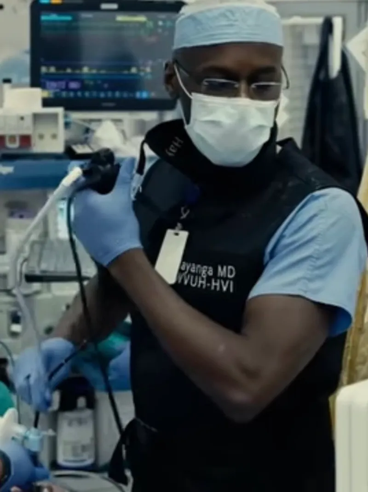
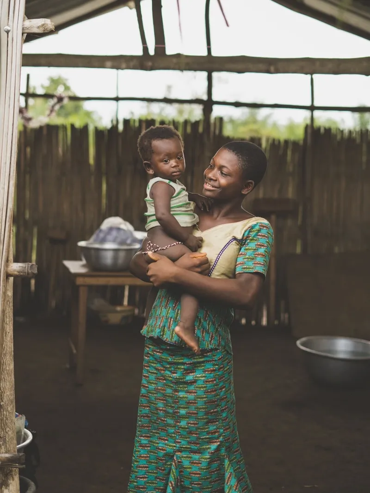

Impact Statement
2022 Impact Statement
“Our hearts go out to the families, friends and loved ones of those who have lost their lives due to the coronavirus pandemic“
The Safety of Others Is Our Highest Priority
The COVID pandemic has created unexpected and extraordinary circumstances that have significantly impacted the RJW Foundation. Travel restrictions, elimination of clinical opportunities, the interruption of our engagement with the community as well as Dr Hayanga‘a important role in the relief of COVID- The RJW Foundation was temporarily unable to provide volunteer and growth opportunities in 2021. So we spent 2022 creating those initiatives and developing a plan to make a difference. RJW Foundation is looking forward to making an impact on healthcare in 2023. To ensure the future productivity we have implemented safety measures as well as leveraging technology. We will provide the necessary support and guidance for successful implementation of research to maximize its impact on healthcare constrained communities. Our efforts will focus on providing education, development, and resources while working with partners who share our vision of a healthier and more equitable world. Dr. Hayanga hopes to use 2023 to reinvigorate the efforts of the foundation.

Women and Children
In Kenya, over 90 percent of pregnant women attend at least one ANC visit during pregnancy. However, Kenya is currently among the 10 countries that contribute the most neonatal deaths globally. The highest odds of neonatal mortality were among neonates whose mothers did not attend any ANC visit and whose mothers lacked skilled ANC attendance during pregnancy. Pregnancy complications are often only identified at great effort and expense, too late for treatment, or not at all.

RJW FOUNDATION 2022/23 INITIATIVE
Core Mission
Strengthen Healthcare with internationally competitive research. These range widely in focus, from improving the survival and health prospects of mothers and babies, surgical/critical health care, addressing chronic disease and building resilient and responsive health systems throughout the region.
Sponsoring Future Leaders
Training healthcare personnel by providing them with valuable skills and opportunities to address the specific healthcare needs of the underserved women and children of East Africa. Focusing on reducing neonatal mortality by strengthening antenatal care, ultrasound, and training geared towards early detection of complications.
Global Collaboration
Fundraising! By leveraging the current network of active support and cultivating opportunities, we can foster partnerships and match funding needs with philanthropic interests, contributing to development in support services and education. Fundraising not only raises funds but raises awareness and will help us work together towards a common goal to keep the East African healthcare developing and stainable.
Molding the Future
Beyond the ambition to change the physical nature and effects of disease, the foundation seeks to influence the trajectory of thought and ambition and inspire future generations to follow in a culture of concern and responsibility for others with a strong emphasis on assisting those within the community who may need more help than others, to believe in the power of collaboration and to opt if ever given a choice to lift others up first.